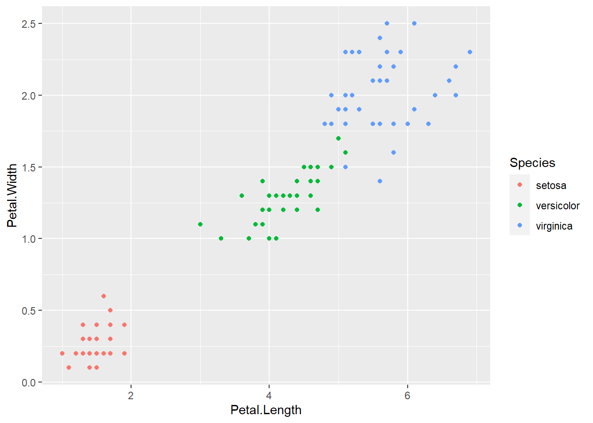
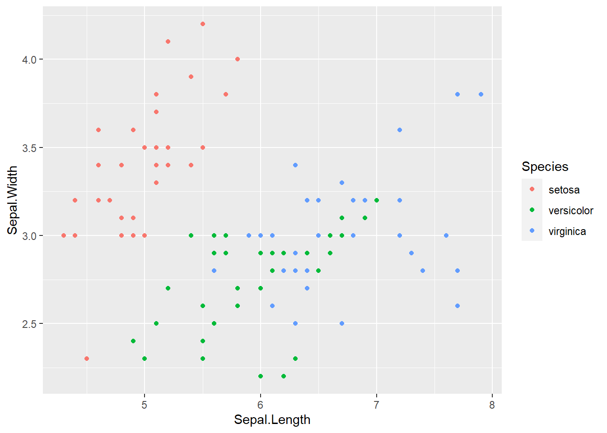
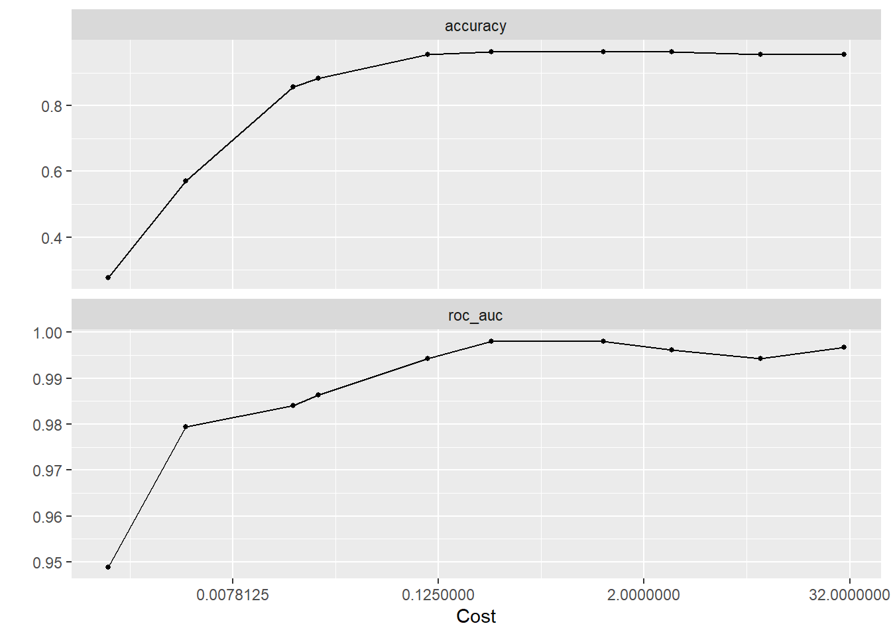
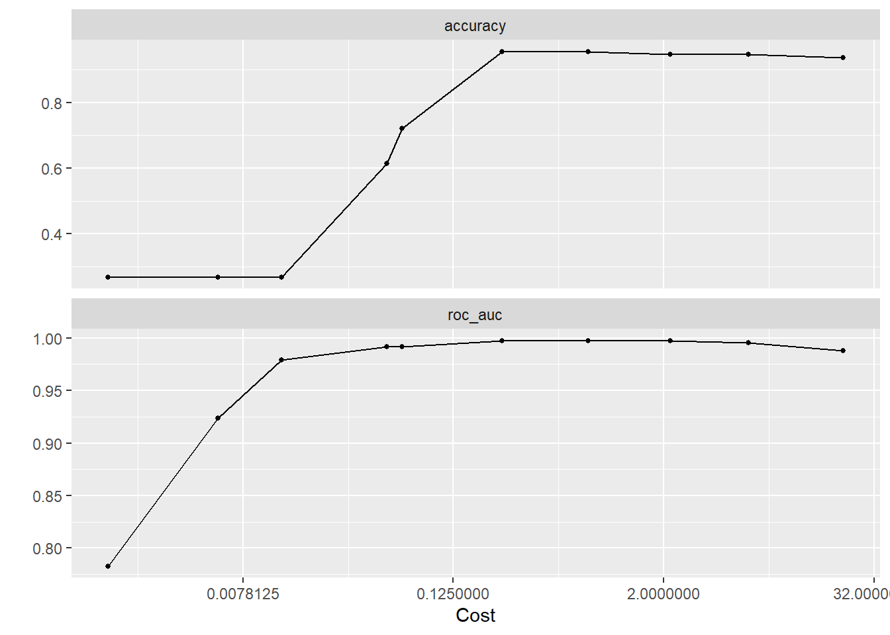
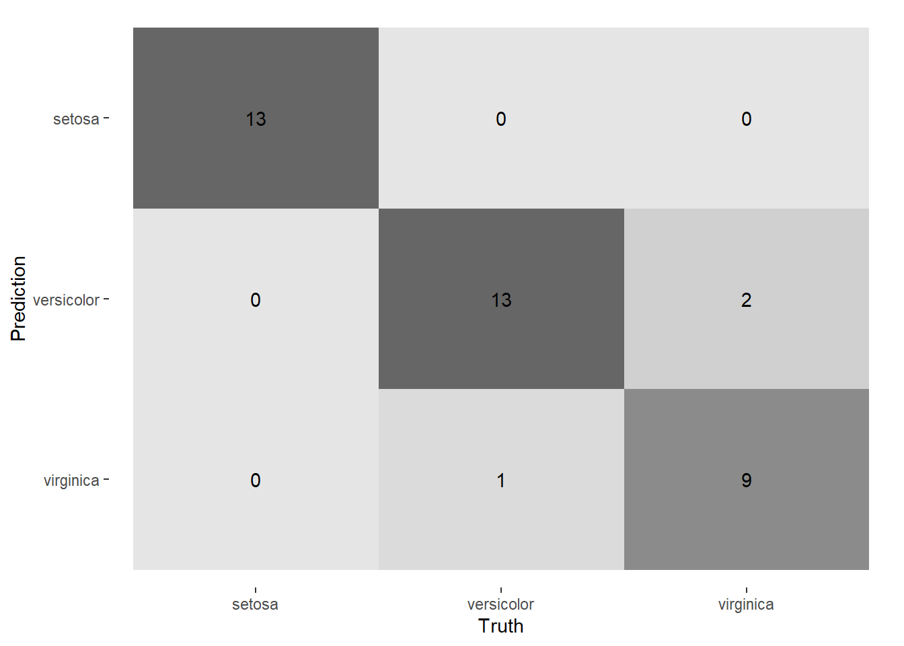

library(tidymodels)
library(ISLR)
library(ISLR2)
library(tidyverse)
library(glmnet)
library(modeldata)
library(kernlab)
library(tidyclust)
library(corrplot)
tidymodels_prefer()SVM Clustering
Support Vector Machines
In this vignette we will look into support vector machines(SVM). SVMs are handy for all classification problems and have been modified to work in clustering. We will look at how this method performs using both the linear and radial kernel methods. Throughout the code walk through we will focus on why some things will be more of less efficient compared to k-means clustering done in the other clustering example.
Objectives: Run support vector machines using both linear and radial kernels and running metrics on them.
Setup
Just like before we will take some time to look into our data in order to understand the variables. Please open the necessary packages shown below.
As you can see below our data contains 4 variables Sepal.Length, Sepal.Width, Petal.Length,Petal.Width, that describe the iris species. We also have the outcome variable which is the species of flower. Our data will include the outcome for this series of coding because SVMs use the outcome on the training data to to decide the threshold of when and where to separate clusters. This logic stands with kernel methods however it is used in higher dimensional space with more complex decision boundaries.
library(tidyverse)
library(ggplot2)
set.seed(0)
#import data
data("iris")
iris %>% head(4) Sepal.Length Sepal.Width Petal.Length Petal.Width Species
1 5.1 3.5 1.4 0.2 setosa
2 4.9 3.0 1.4 0.2 setosa
3 4.7 3.2 1.3 0.2 setosa
4 4.6 3.1 1.5 0.2 setosaWe will split the data for SVM predicting. We avoided stratifying there is no unbalanced proportioning within groups and then we cross validated with 5 folds because that is a common and appropriate value.
iris_split <- initial_split(data=iris)
iris_train <- training(iris_split)
iris_test <- testing(iris_split)
iris_folds <- vfold_cv(iris_train,v=5)Linear kernel fitting
Before we get into any kernels we will first make plots to visualize possible clusters. For an easy read we made two graphs one which has the correlation between only petal length and width on the species outcome. After this will will repeat this process with the sepal width and length to make further observations,
ggplot(iris_train, aes(Petal.Length, Petal.Width, color = Species)) +
geom_point()
ggplot(iris_train, aes(Sepal.Length,Sepal.Width, color = Species)) +
geom_point()
We will first start with a linear kernel however let’s first talk about why this might not work out. Looking at the plot comparing the sepal length and width on the outcome on species we can visually see there is no linear way to separate these clusters. In theory we need something with a higher dimensionality because we have a multivariate model. It is also good to note that in the context of the iris data set we were told that setosa is linearly separable from versicolor and virginica but versicolor and virginica are not linearly separable from each other. It is always good to be comfortable with your data so that you do not take extra steps. (below is the mathematical equation for a linear as well as a polynomial kernel)
Common Kernel Functions for SVM
- Linear: \(k(x_1,x_2)=x_1\cdot x_2\)
- Polynomial: \(k(x_1,x_2) = (\gamma \ x_1\cdot x_2 + c)^d\)
- Gaussian or radial basis: \(k(x_1,x_2) = exp(-\gamma \|x_1-x_2\|^2)\)
For a simpler classification data set this will work out in your favor, for today we will just run it to show it will not be in our favor. In the recipe we will standardize all the variables and then use default values when tuning each of the 5 levels we have.
svm_rec <- recipe(Species ~ Petal.Length + Petal.Width + Sepal.Length + Sepal.Width,
data = iris_train) %>%
step_normalize(all_predictors())
svm_linear_spec <- svm_poly(degree = 1, cost = tune()) %>%
set_mode("classification") %>%
set_engine("kernlab")
svm_linear_wkflow <- workflow() %>%
add_recipe(svm_rec) %>%
add_model(svm_linear_spec)
svm_linear_grid <- grid_regular(cost(), degree(), levels = 5)
svm_linear_res <- tune_grid(svm_linear_wkflow,
iris_folds, svm_linear_grid)
svm_linear_res %>% autoplot()
Contrary to former assumptions the roc-auc had its highest value at almost 1.0 which means it performed ideally. However, this perfect roc_auc and almost perfect accuracy could be attributed to over-fitting if it is miscalculated.
Below we fit the linear kernel to the best metrics in case we want to show visualizations on it.
svm_best_linear <- select_best(svm_linear_res)
svm_final_linear_fit <- finalize_workflow(svm_linear_wkflow, svm_best_linear) %>%
fit(iris_train)Radial Kernel
Doing the same method however now using a radial kernel we actually get lower results for ROC_AUC and accuracy which is odd for a couple reasons. Radial kernels are for higher dimensional data which is what we have because we have a multi-class data set. On top of this our outcome classes are not all linearly separable and radial kernels can also deal with this.
svm_rbf_spec <- svm_rbf(cost=tune()) %>%
set_mode('classification') %>%
set_engine('kernlab')
svm_rbf_wkflow <- workflow() %>%
add_recipe(svm_rec) %>%
add_model(svm_rbf_spec)
svm_rbf_grid. <- grid_regular(cost(),levels=5)
svm_rbf_res <- tune_grid(svm_rbf_wkflow,
iris_folds,svm_rbf_grid)
svm_rbf_res %>% autoplot()
svm_best_radial <- select_best(svm_rbf_res)
svm_final_radial_fit <- finalize_workflow(svm_rbf_wkflow, svm_best_radial) %>%
fit(iris_train)In both kernels we extracted the best values and fitted them so we could get a final visual of the one that performed better. In the end I will make the educated choice of creating a confusion matrix based on the radial kernel to see the results of our predictions based on the test data. This is because a radial kernel in theory is much more suited for our data. Lastly it is good to note that we choose to use a confusion matrix because it makes the most sense for interpretability with a multiclass model.
augment(svm_final_radial_fit, iris_test) %>%
select(Species, starts_with(".pred")) %>%
conf_mat(Species, .pred_class) %>%
autoplot(type = "heatmap")
As we expected the confusion matrix shoes errors distinguishing virginica and versicolor the two species that were not said to be linearly separated from the setosa species.
Takeaway
In conclusion this lab shows that support vector machines are versatile but have a lot things to look out for when clustering compared to k-means. You have to be aware of your data and its context. You must take different steps for multi-class models for example how to visualize their results.